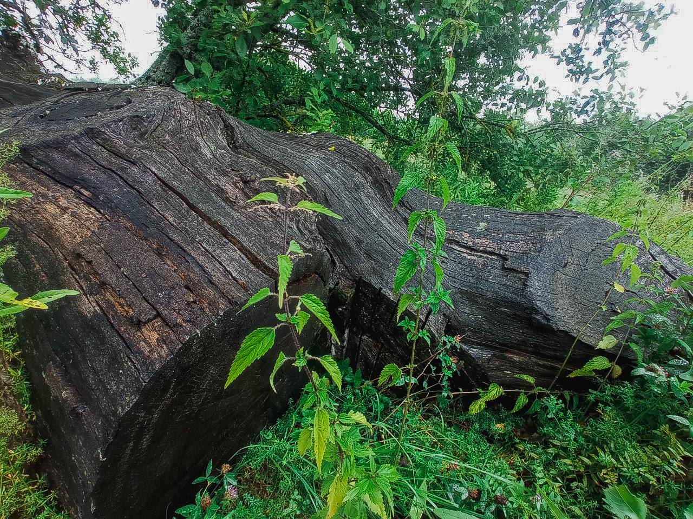
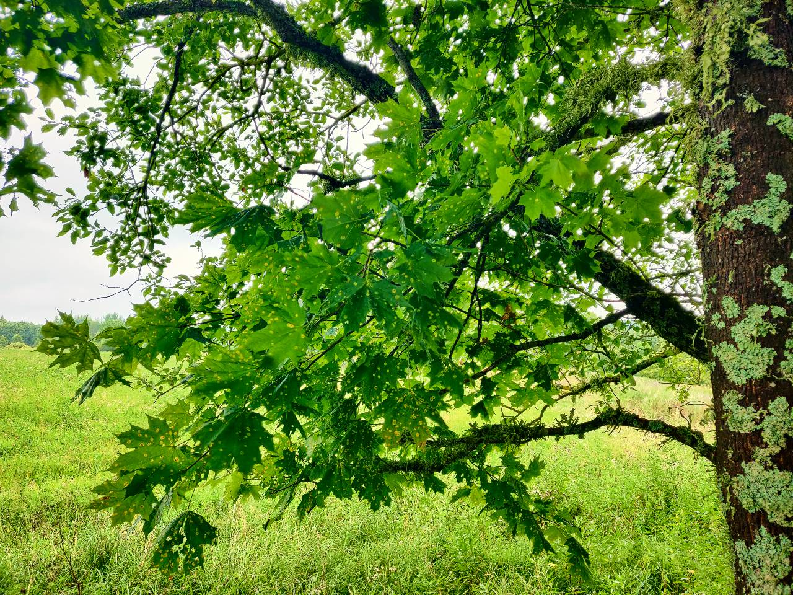
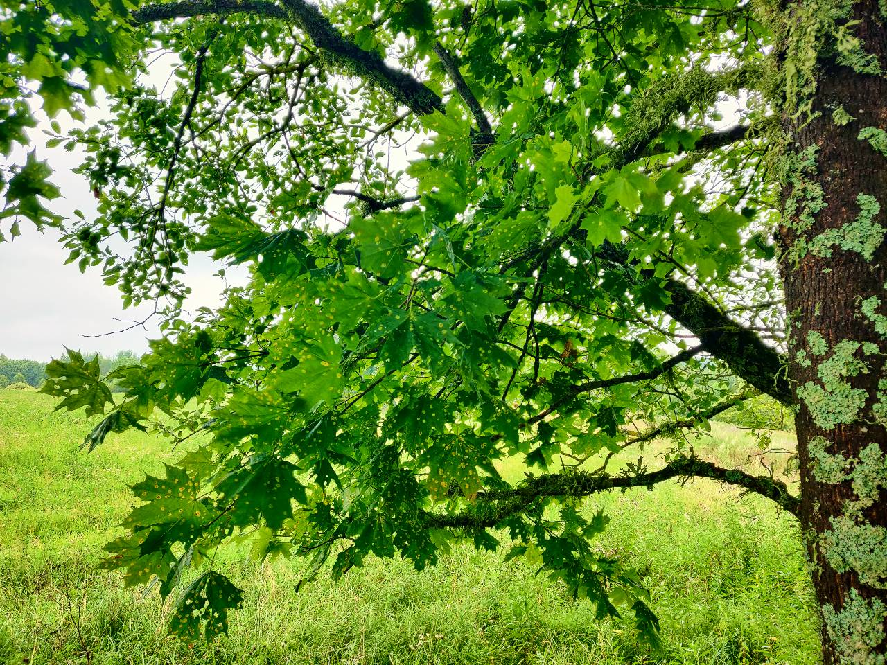
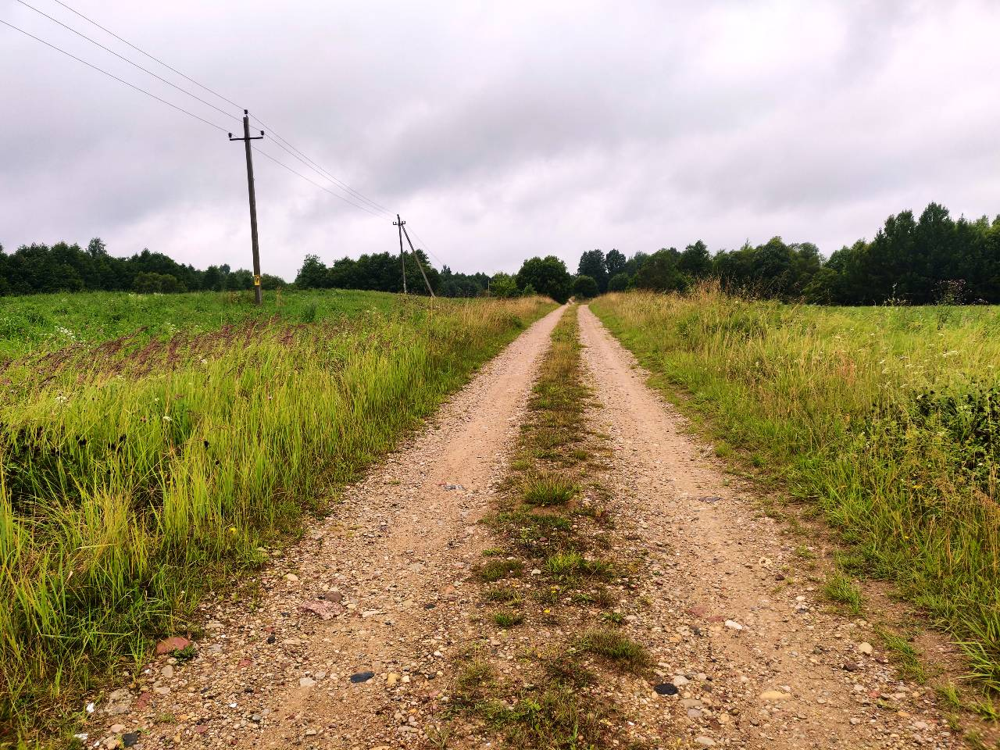
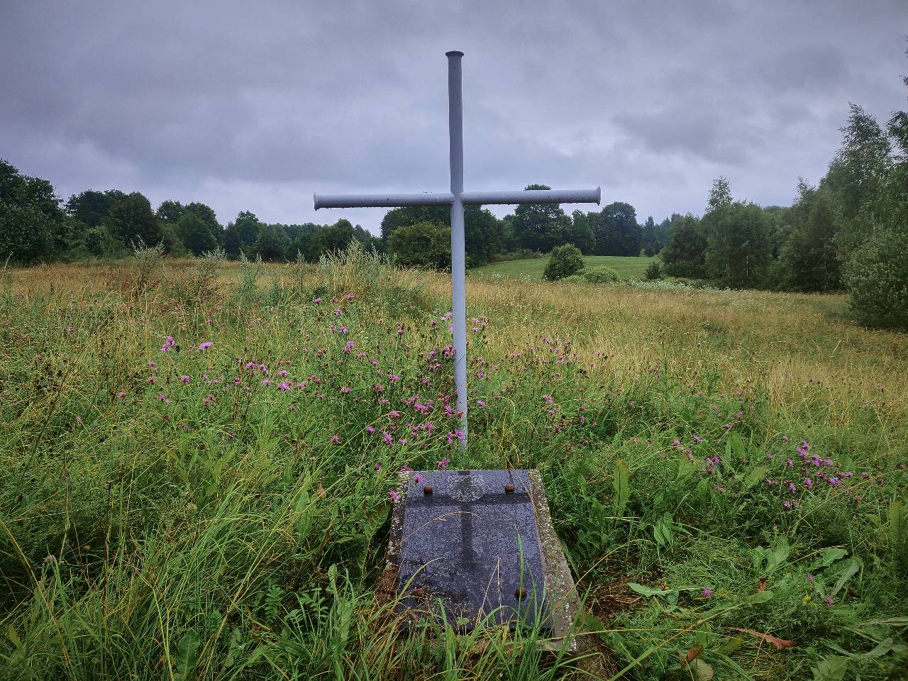
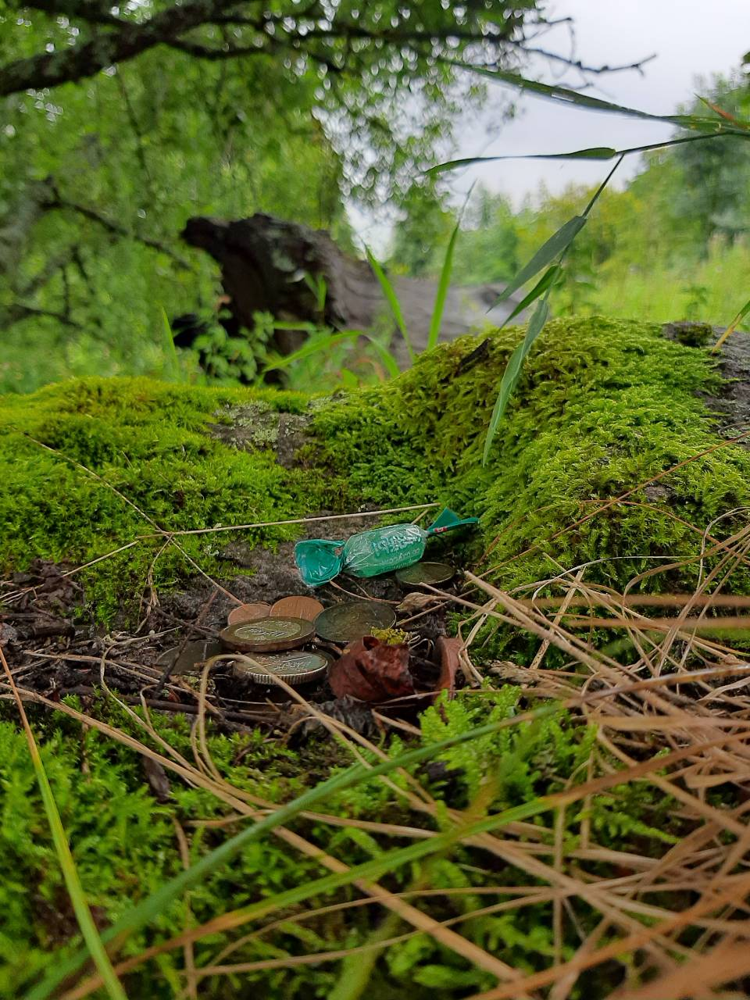
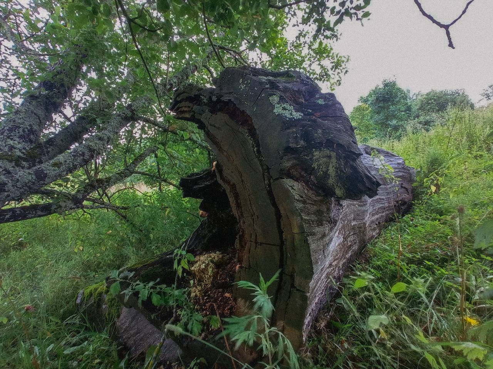

Старажытнае капішча і рэшткі ўпаўшага вялізнага дуба, якія ляжаць на каменным ідале. Камень-ахвярнік і вельмі маляўнічае месца ля самай дарогі, якое прыносіць поспех. Цікава? Паехалі!
Мясцовыя жыхары паганскіх часоў лічылі гэтае месца святым. Колькі гадоў дубу, які там стаяў, да гэтага часу дакладна не вядома. Паводле апавяданняў, дыяметр яго ля падножжа зямлі складаў 14 метраў. А вышынёй ён быў з Лынтупскі касцёл - а гэта 30 метраў!

Яшчэ ў 70-я гады мінулага стагоддзя дуб быў настолькі вялізным, што ў яго дупле мясцовыя пастухі хаваліся ад дажджу і палілі вогнішчы. У выніку шматлікіх падпалаў дрэва ўпала, а мясцовыя жыхары распілавалі дуб для сваіх патрэб. Цяпер рэшта велізарнага святога дрэва ад узроўня галавы чалавека і вышэй ляжыць каменным ідале на месцы старажытнага капішча.
 

Капішча - паганскі храм пад адкрытым небам. На ім абавязкова ёсць камень-ахвярнік з выемкай для ахвярапрынашэнняў, святое дрэва - дуб і ідал, які ўпаў. На камяні каля рэшткаў дуба да гэтага часу людзі пакідаюць манеткі, каб улагодзіць багоў і атрымаць іх дапамогу.

Жалуды, галінкі і кара дуба прыносілі поспех і дапамагалі людзям. Так прадзед краязнаўцы Алеся - удзельнік паўстання 1831 года быў пазбаўлены дваранства і адпраўлены па этапе на 25-гадовую катаргу ў Сібір. Яго жонка перадала яму кару і сучок дуба. Прадзед вярнуўся з катаргі жывым, меў дзяцей, і стаў удзельнікам паўстання Кастуся Каліноўскага ў 1863 годзе і змог пазбегнуць рэпрэсій пасля яго падаўлення! Неверагодны поспех уся сям'я прыпісвае дапамозе святога дрэва.
 
Чаму варта ехаць на гэтае месца:
⁃ побач з дарогай, лёгка знайсці;
⁃ маляўніча: атрымліваюцца выдатныя фота
Запісалі Аляксей Прыбыткоў, Мікола Краўчанка.